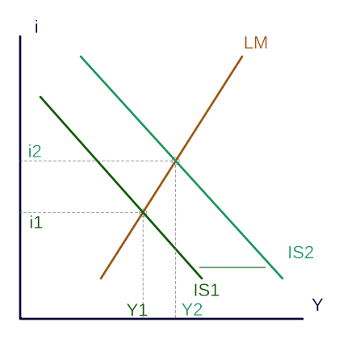
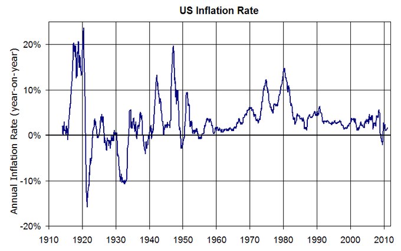

Keynesian theory posits that aggregate demand will not always meet the supply produced.
Explain the main tenets of Keynesian economics
John Maynard Keynes published a book in 1936 called The General Theory of Employment, Interest, and Money , laying the groundwork for his legacy of the Keynesian Theory of Economics. It was an interesting time for economic speculation considering the dramatic adverse effect of the Great Depression . Keynes's concepts played a role in public economic policy under Roosevelt as well as during World War II, becoming the dominant perspective in Europe following the war.
John Maynard Keynes came to fame after publishing his economic theories during the Great Depression.
At the time, the primary school of economic thought was that of the classical economists (which is still a popular school of thought today). The central tenet of the classical argument says that supply can always create demand, and that surpluses will result in price reductions to the point of consumption. Put simply, people have infinite needs and the market will self-correct to the aggregate demands and available resources. This implies a hands-of public policy where markets are capable of taking care of themselves.
Keynes positioned his argument in contrast to this idea, stating that markets are imperfect and will not always self correct. Keynes theorized that natural inefficiencies in the market will see goods that are not met with demand. This wasted capital can result in market losses, unemployment, and market inefficiency (this was called 'general glut' in the classical model, when aggregate demand does not meet supply). Keynes insisted that markets do need moderate governmental intervention through fiscal policy (government investment in infrastructure) and monetary policy (interest rates).
With this overview in mind, Keynesian Theory generally observes the following concepts:
While Keynesian Theory has been expounded upon significantly over the years, the important takeaway here is that aggregate demand (and thus the amount of supply consumed) is not a perfect system. Instead, demand is affected by various external forces that can create an inefficient market which will in turn affect employment, production, and inflation.
In this figure, the IS (Interest - Saving) curve is shifted outward in a way that raises both interest rates (i) and the 'real' economy (Y). The implication is that interest rates affect investment levels, and that these investment levels in turn affect the overall economy.
Monetarism focuses on the macroeconomic effects of the supply of money and the role of central banking on an economic system.
Explain the main tenets of Monetarism
In the rise of monetarism as an ideology, two specific economists were critical contributors. Clark Warburton, in 1945, has been identified as the first thinker to draft an empirically sound argument in favor of monetarism. This was taken more mainstream by Milton Friedman in 1956 in a restatement of the quantity theory of money. The basic premise these two economists were putting forward is that the supply of money and the role of central banking play a critical role in macroeconomics.
The generation of this theory takes into account a combination of Keynesian monetary perspectives and Friedman's pursuit of price stability. Keynes postulated a demand-driven model for currency; a perspective on printed money that was not beholden to the 'gold standard' (or basing economic value off of rare metal). Instead, the amount of money in a given environment should be determined by monetary rules. Friedman originally put forward the idea of a 'k-percent rule,' which weighed a variety of economic indicators to determine the appropriate money supply.
Theoretically, the idea is actually quite straight-forward. When the money supply is expanded, individuals will be induced to higher spending. In turn, when the money supply retracted, individuals would limit their budgetary spending accordingly. This would theoretically provide some control over aggregate demand (which is one of the primary areas of disagreement between Keynesian and classical economists).
Monetarism began to deviate more from Keynesian economics however in the 70's and 80's, as active implementation and historical reflection began to generate more evidence for the monetarist view. In 1979 for example, Jimmy Carter appointed Paul Volcker as Chief of the Federal Reserve, who in turn utilized the monetarist perspective to control inflation. He eventually created a price stability, providing evidence that the theory was sound. In addition, Milton Friedman and Ann Schwartz analyzed the Great Depression in the context of monetarism as well, identifying a shortage of the money supply as a critical component of the recession.
The 1980s were an interesting transitional period for this perspective, as early in the decade (1980-1983) monetary policies controlling capital were attributed to substantial reductions in inflation (14% to 3%)(see ). However, unemployment and the rise of the use of credit are quoted as two alternatives to money supply control being the primary influence of the boom that followed 1983.
The inflation rates over time in the U.S. represent some of the evidence put forward by monetarist economists, stating that governmental control of the money supply allows for some control over inflation.
As these counter arguments in the 1980s began to arise, critics of monetarism became more mainstream. Of the current monetarism critics, the Austrian school of thought is likely the most well-known. The Austrian school of economic thought perceives monetarism as somewhat narrow-minded, not effectively taking into account the subjectivity involved in valuing capital. That is to say that monetarism seems to assume an objective value of capital in an economy, and the subsequent implications on the supply and demand.
Other criticisms revolve around international investment, trade liberalization, and central bank policy. This can be summarized as the effects of globalization, and the interdependence of markets (and consequently currencies). To manipulate money supply there will inherently be effects on other currencies as a result of relativity. This is particularly important in regards to the U.S. currency, which is considered a standard in international markets. Controlling supply and altering value may have effects on a variety of internal economic variables, but it will also have unintended consequences on external variables.
Austrian economic thought is about methodological individualism, or the idea that people will act in meaningful ways which can be analyzed.
Explain the main tenets of Austrian economics
The Austrian school of economics originated in the 19th century in Vienna, Austria. While there were a variety of famous economists attributed to the early foundations and later expansions of the Austrian economic perspective, Carl Menger, Friedrich von Weiser, and Eugen von Bohm-Bawerk are widely recognized as critical early pioneers. The general perspective of Austrian economic thought is methodological individualism, or the recognition that people will act in meaningful ways which can be analyzed for trends.
The Austrian school of thought provided enormous value to the economic climate, both as a foundation for future economics and as a deliberate counterpoint to more quantitative analysis. Of the most important ideologies, the following central tenets are:
As you can see from the above points, this school of economics is largely about making qualitative observations of the markets. These observations are absolutely critical in understanding the theoretical landscape, but difficult to enact in practice.
Austrian economists are often criticized for ignoring arithmetic or statistical ways to measure and analyze economics. Indeed, Austrian economists do not often place much weight on concepts such as econometrics, experimental economics, and aggregate macroeconomic analysis. In this sense, the Austrian school of thought is something of an outsider relative to other perspectives (i.e. classical, Keynesian, etc.).
Paul Krugman criticized Austrian economics as lacking explicit models of analysis, or essentially a lack of clarity in their approach. This results in inadvertent blind spots. This is a sensible criticism in many ways, as the fundamental idea behind this economic theory is that it is driven by individuals and individuals are not always rational (indeed, they are quite often irrational). As a result of this, Austrian economics often rests on the integration of social sciences (psychology, sociology, etc.) to explain preferences and consumer behavior, which is often counter-intuitive. As a result, it is very difficult to accurately measure and provide tangible proof of the efficacy of Austrian models.
Neoclassical and neo-Keynesian ideas can be coupled and referred to as the neoclassical synthesis, combining alternative views in economics.
Summarize neoclassical and Neo-Keynesian economics
The history of different economic schools of thought have consistently generated evolving theories of economics as new data and new perspectives are taken into consideration. The two most well-known schools, classical economics and Keynesian economics, have been adapting to incorporate new information and ideas from one another as well as lesser known schools of economics (Chicago, Austrian, etc.). These different perspectives have motivated economists to generate the neoclassical and neo-Keynesian perspectives. The neoclassical perspective, in conjunction with Keynesian ideas, is referred to as the neoclassical synthesis, which is largely considered the 'mainstream' economic perspective.
In approaching Neoclassical economics, it is most important to keep in mind the following three principles:
A brief timeline of classical to neoclassical perspectives would begin with thought processes put forward by Adam Smith and David Ricardo (alongside many others). The basic idea is that aggregate demand will adjust to supply, and that value theory and distribution will reflect this rational, cost of production model. The next phase was the observation that consumer goods demonstrated a relative value based on utility, which could deviate from consumer to consumer. The final phase, and most central to the advent of the neoclassical perspective, is the introduction of marginalism. Marginalism notes that economic participants make decisions based on marginal utility or margins. For example, a company hiring a new employee will not think of the fixed value of that employee, but instead the marginal value of adding that employee (usually in regards to profitability).
Neo-Keynesian economics is often confused with 'New Keynesian' economics (which attempts to provide microeconomic foundation to Keynesian views, particularly in light of stagflation in the 1970s). Neo-Keynesian economics is actually the formalization and coordination of Keynes's writings by a number of other economists (most notably John Hicks, Franco Modigliani, and Paul Samuelson). Much of the conceptual value is captured in the previous atoms on Keynesian views, but the substantial value of a few neo-Keynesian ideas is worth reiterating:
When learning about these economic perspectives, it is important to understand the value they add to one another and the overall efficacy of all economic theory. Economists are often the product of multiple schools of thought, and don't fit neatly into one school or another.
{kind=link}
{kind=link}